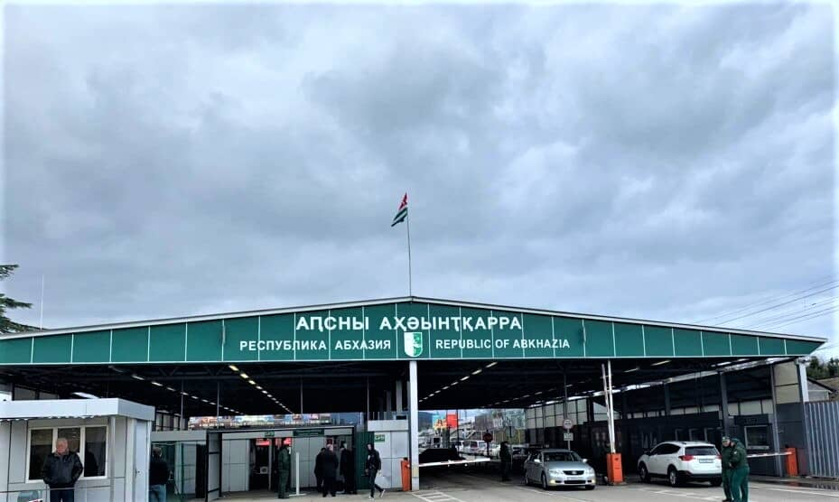
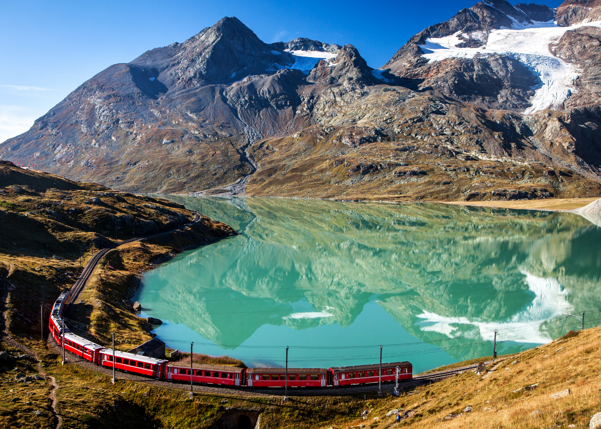
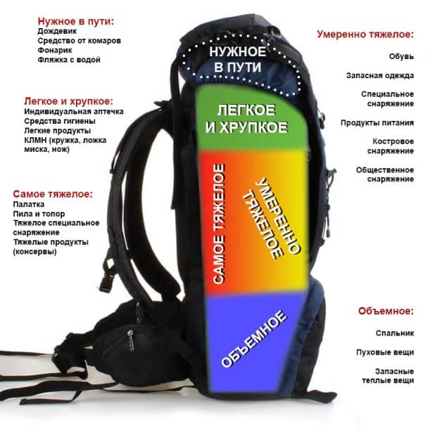

Вопросы / Ответы
"Граница Россия - Абхазия"

◉ Документы необходимые для прохода через границу :
граждане РФ, по внутреннему паспорту, а также граждане ДНР и ЛНР (с украинскими паспортами с
пропиской в регионах Донецка и Луганска), граждане Республики Беларусь и Республики
Казахстан
◉ Дети до 18 лет могут ехать только в сопровождении взрослого. Для несовершеннолетних —
паспорт для
детей от 14 до 18 лет, свидетельство о рождении, в случае путешествия с сопровождающим —
генеральная
нотариальная доверенность с разрешением от родителей на доверенное лицо с правом пересечения
границы
Абхазии (или просто границ без указания стран).
◉ отсутствие судимостей
◉ отсутствие задолженностей в ФСС. Проверить можно через сайт «Госуслуги» по ИНН.
◉ домашних животных провозить можно, но обязательно наличие паспорта прививок и справок от
ветеринара, переноски.
◉ справки и ПЦР-тесты предоставлять на границе не требуется
- ✅ Разрешено к ввозу:
- алкоголь 3 литра. Если ввозится более 3 литров, оплачивается госпошлина. Разрешено ввозить до 5 литров алкоголя.
- сигареты 200 штук /или 50 сигар/или 250г. табака
- мед в заводской упаковке не более 3 литров
- бензин 20 литров + топливо в баке
- ювелирные украшения в количестве 5 изделий
- ❌Запрещено к ввозу:
- огнестрельное оружие
- боевые припасы
- электрошокеры
- газовые баллончики
- дубинки
- наркотические и психотропные вещества
- ❌Запрещено к вывозу:
- самшит
- прополис
- эвкалипт
- мясная и молочная продукция без заводской упаковки
- антиквариат
- оружие и боеприпасы
- наркотики
- сигареты более 200 штук на человека
- алкоголь более 2л на человека
"Как добраться в Абхазию"

✈️ НА САМОЛЕТЕ
Действующего аэропорта, принимающего международные рейсы, сейчас нет. Вы прилетаете в Сочи,
далее
добираетесь до пешеходной границы с Абхазией на такси/автобусе
🚗 ПЕРЕСЕЧЕНИЕ ГРАНИЦЫ НА АВТОМОБИЛЕ / ТУРИСТИЧЕСКОМ АВТОБУСЕ
Если Вы едите на своем автомобиле, то для пересечения границы Вам необходимо добраться до
КПП в
поселке Веселое города Сочи Адлерского района, расположенного по адресу:
Россия, Краснодарский край, городской округ Сочи, село Веселое, Урожайная улица, 101 (GPS
координаты: 43.396793, 40.001439).
ПОРЯДОК ПРОХОЖДЕНИЯ ГРАНИЦЫ
Российская сторона
● При прохождении российского контроля водитель остается в машине.
● Пассажиры выходят из транспортного средства и пешком переходят зону контроля, при этом
необходимо
предъявить документы и багаж, задекларировать валюту и предметы, подлежащие декларированию.
● Ребенок остается с родителем, то есть если родитель — водитель, то паспортный контроль
водитель
проходит вместе с ребенком в окошке для водителей.
● Водитель подает документы в отдельное окошко контроля: свой паспорт, техпаспорт на машину,
водительское удостоверение. В случае если водитель не является владельцем автомобиля, ему
необходимо
предъявить генеральную доверенность от владельца АМТС, в которой указано о разрешении выезда
за
границы России.
● В обязательном порядке пограничники осматривают машину и требуют открыть багажник для
визуального
осмотра.
● После прохождения российской границы пассажиры могут сесть обратно в автомобиль и доехать
до
абхазской границы.
Абхазская сторона
Владельцам госномеров России:
● На абхазской стороне как правило пограничники не требуют выйти из машины, зачастую
достаточно
будет
подать документы всех туристов в окошко пограничнику. Но будьте готовы по требованию
пограничника
выйти из машины.
● Отметок или виз в РОССИЙСКИЕ паспорта не ставят, только заносят сведения в базу данных.
Если Вы
предъявите заграничный паспорт — отметку о въезде на территорию Абхазии Вам поставят.
● Владельцам госномеров других стран:
● После моста, но перед абхазским КПП, нужно свернуть налево и еще раз налево
● Там в здании предстоит оформить таможенную декларацию на автомобиль. Нужно заполнить
специальный
бланк, на котором будет стоять дата пересечения границы. По сути, этот документ нужен для
того,
чтобы отследить количество дней пребывания иностранца в Абхазии.
● И только после оформления таможенной декларации можно ехать к пропускному пункту, чтобы
завершить
пересечение границы с Абхазией на автомобиле.
● При возвращении в Россию эту декларацию нужно будет предъявить на КПП Псоу и вернуть в то
здание,
где ее выдавали.
❗ ️В летний сезон пересечение границы на машине может занять довольно много времени из-за
большого
наплыва туристов. Учитывайте это при указании времени заезда в гостиницу.
🏃 ПЕРЕСЕЧЕНИЕ ГРАНИЦЫ ПЕШКОМ
Если Вы собираетесь переходить границу пешком, то Ваш ориентир находится по адресу:
Россия, Краснодарский край, городской округ Сочи, село Веселое, Урожайная улица, 116 (GPS
координаты: 43.395177, 40.007027)
● На автобусах №№ 125п, 173: рядом с МАПП «Адлер» расположена конечная остановка рейсовых
автобусов
«КПП Псоу». — автобус №125п Горбольница №4 (Сочи) — КПП Псоу — маршрутное такси №173 КПП
Псоу —
Адлер центр — Аэропорт — КПП Псоу
● На автобусах №№ 57, 100, 117, 125 можно доехать до остановки «Казачий рынок», от нее
пешком 1 км
до
КПП по ул. Урожайная. — автобус №57: Вокзал Адлер — Вокзал Олимпийский Парк — автобус №100:
Вокзал
Адлер — Ледовый дворец Большой — автобус №117: Администрация Кудепстинского сельского округа
—
Совхоз Россия — автобус № 125: ТРЦ «Моремолл» (Сочи) — Совхоз Россия
● Пешеходы без автотранспорта пересекают российскую границу через отдельный пассажирский
терминал на
территории МАПП «Адлер». Чтобы попасть на контрольно-пропускной пункт нужно от Казачьего
рынка в
Адлере пройти по улице Урожайной чуть более одного километра. Дорога занимает около 10-15
минут.
● На границе нужно будет пройти два КПП: российский и абхазский. Проход между пунктами
досмотра
осуществляется по мосту, огражденному с обеих сторон решетками, около 150 м пешеходы со
своим
багажом следуют пешком по мосту через реку Псоу до погранично-таможенных служб Республики
Абхазия и
далее до стоянок общественного транспорта и такси на территории Абхазии.
🚞 ПЕРЕСЕЧЕНИЕ ГРАНИЦЫ НА ПОЕЗДЕ
● Железнодорожный пункт пропуска ЖДПП г. Адлер (на территории железнодорожной станции
«Весёлое»)
предусмотрен для граждан, следующих через границу пассажирскими поездами дальнего следования
и
электропоездами.
● Через ж/д пункт пропуска ЖДПП «Адлер» перевозки осуществляются пассажирскими поездами
международного
сообщения Москва—Сухум № 306М, Санкт-Петербург—Сухум №479А, Санкт-Петербург—Сухум №215А и
Самара—Сухум №487Й.
Российская сторона:
Таможенный и паспортный контроль со стороны России осуществляются без высадки пассажиров на
станции
железнодорожного пункта пропуска ЖДПП г. Адлер (на территории железнодорожной станции
«Весёлое»).
Обычно процедура занимает около часа: таможенники заходят в вагон, пассажиры обязаны
предъявить
документы и багаж к досмотру.
Абхазская сторона:
Паспортный и таможенный контроль со стороны Абхазии проводится прямо в вагонах поезда на
станции
Цандрыпш (Абхазия), также без высадки пассажиров.
"Что взять с собой в многодневный поход?"
 Как собрать рюкзак правильно, чтобы он из верного спутника не превратился в бесполезный балласт?
Как собрать рюкзак правильно, чтобы он из верного спутника не превратился в бесполезный балласт?
Итак, остановимся на оптимальном минимуме в летний период:
- Рюкзак на 50-70 л, спальник, коврик, палатка
- Удобная, лучше специализированная обувь, термобелье (да,да, желательно взять даже летом), ветровка, головной убор, сменное белье,купальники/плавки, фонарик
- АПТЕЧКА!!! Взять с собой свои лекарства , если имеете хронические заболевания и ОБЯЗАТЕЛЬНО сообщить нам об этом!!! Групповая аптечка находится у инструктора-проводника.
- Репилент, солнцезащитный крем
- Посуда: кружка, миска, вилка/ложка, нож
- Предметы личной гигиены: паста, зубная щетка, влажные салфетки, мыло
Берите все в маленьком объёме, чтобы не носить лишний груз. Девушки, без фанатизма 😉
"Как собрать рюкзак в поход и не умереть в первые 5км похода"
 Как правильно уложить рюкзак, чтобы не начать ненавидеть его и себя в первые часы похода)))
На схеме очень наглядно показано куда что укладывать.
❗️Запомни куда что положил, чтобы не переворачивать рюкзак вверх дном пытаясь отыскать нужную вещь.
❗️Попроси попутчиков поднять рюкзак и навестить на плечи. Если никого нет рядом, ставим рюкзак на возвышение (50-80см), приседаем, спиной к рюкзаку надеваем лямки и встаём.
❗️Отрегулируй собранный рюкзак под себя:
- регулируем поясные ремни, плотно затягиваем пояс, чтобы не скользил, а нагрузка распределялась на бедра и крестец
- регулируем лямки - снаряжение должно сидеть плотно и не болтаться.
Наши инструктора всегда помогут, подскажут и подгонят правильно твой рюкзак! Мало того, проверка правильной укладки рюкзака обязательное мероприятия перед стартом многодневного похода.
Когда все ритуалы по укомплектовке туриста соблюдены, вперёд, покорять вершины и расширять горизонты 🙃